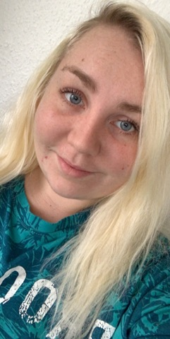

Info om indhold
Denne side er lavet som et eksamensprojekt, og indeholder nogle forskellige punkter, vi har gennemgået i løbet af det første semester som MMD’ere. Der er nogle forskellige afsnit omkring grundlæggende viden i webudvikling, kommunikation, design, projekter vi har lavet i løbet af 1 semester og et udsnit af nogle af de større opgaver vi har lavet.
Webudvikling

Under fanen Webudvikling, kommer jeg ind på HTML, CSS og dens historie, Internettetshistorie og Responsiv Design og Grid.
Kommunikation

Under Kommunikation, har jeg valgt at skrive om Kvantitative og Kvantitative metoder, Buissnes Model Canvas og om Brugertest.
Design

Design omhandler Farver, Typografi, Fotografering, Illustrator, Photoshop og Gestantlovene.
Projekter

Her kommer jeg ind på nogle af de projekter vi har lavet på skolen, nemlig HTML og CSS workshop, Design Thinking og Onepage.
Opgaver
Nogle af de opgaver vi har fået stillet af skolen, f.eks. Licens og ophavsret og Quick'n Dirty.
Reflektion
Da vi fik stillet denne opgave, virkede hele processen meget spændende, men samtidig skræmmende. Det har været en meget lærerig proces, da jeg har lært at jeg faktisk godt kan finde ud af at kode en hjemmeside.
Jeg startede med at danne mig et overblik over hvilke emner vi havde gennemgået på 1.semester, og dermed finde ud af hvad indhold der skulle være på min side. Efter mine emner var fundet, begyndte jeg at finde min tekst og mine kilde , undervejs i processen, satte jeg mig sammen med Katharina og vi fik lavet et overblik over hvor vi kunne finde vores kilder henne via. sticky notes på en opslagstavle.
Jeg lavede en handlingsplan over hvordan jeg ville gribe mine tid an. Dog skred min plane nogle enkelte gange, men i store træk, holde min plan meget godt.
Mit slut resultat er jeg selv meget stolt af, da det er med til at vise mig, at hvis man sætter sig ind i tingene, og hvis man gerne vil, så kan man komme langt, og at hvis man spørg om hjælp kommer man også meget langt.